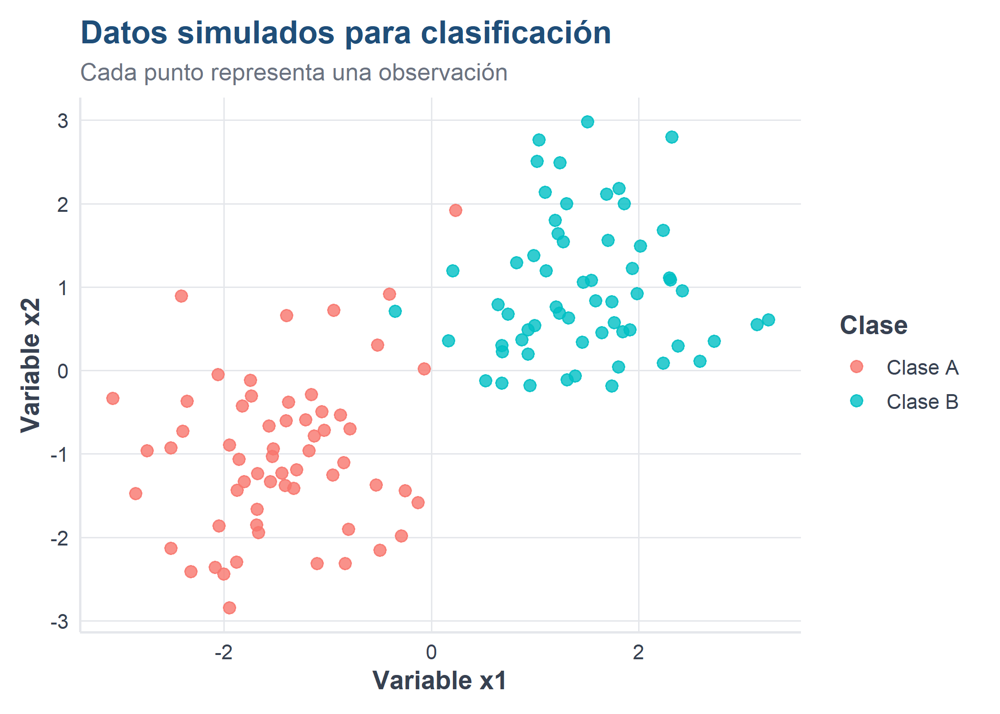
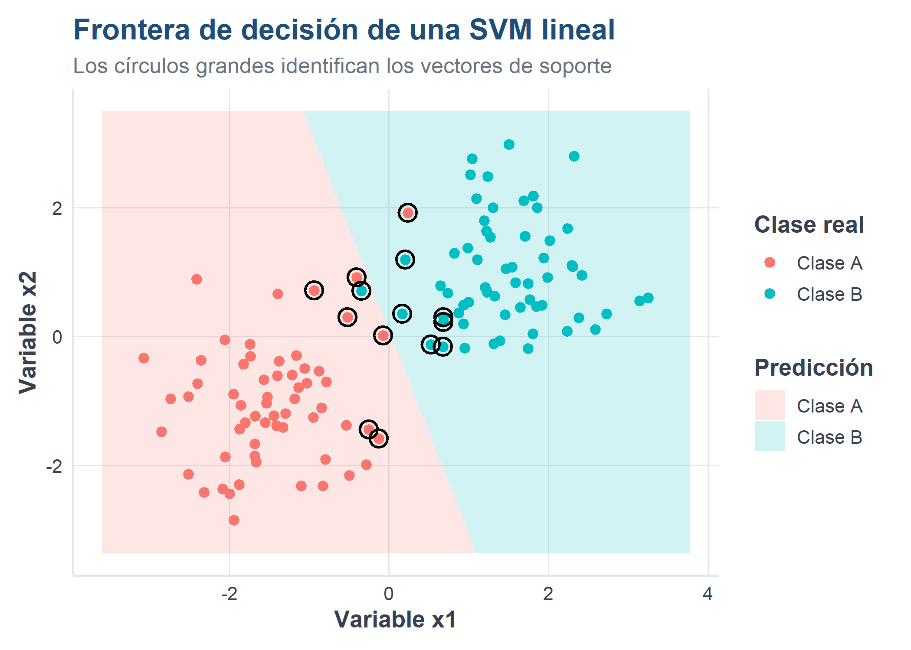

Al finalizar este capítulo, el lector será capaz de:
explicar la idea del hiperplano de separación y del margen máximo;
identificar los vectores de soporte;
distinguir entre una SVM lineal y una SVM con kernel;
comprender el papel de los parámetros cost, gamma y del tipo de kernel;
entrenar modelos SVM en R;
evaluar una SVM mediante una matriz de confusión y métricas de clasificación;
utilizar ponderación de clases cuando la variable respuesta está desbalanceada;
comparar una SVM lineal con una SVM de kernel radial.
10.2 Introducción
Las máquinas de vectores de soporte, conocidas como SVM por Support Vector Machines, son métodos supervisados utilizados principalmente para clasificación. Su propósito es construir una frontera que separe las clases con el margen más amplio posible.
La idea es sencilla de visualizar: si dos grupos pueden separarse mediante una línea, existen muchas líneas posibles, pero la SVM busca aquella que deja la mayor distancia entre la frontera y las observaciones más cercanas de cada clase.
Esas observaciones cercanas reciben el nombre de vectores de soporte. Aunque el conjunto de datos contenga miles de registros, los vectores de soporte son los que determinan directamente la posición de la frontera.
Supongamos que cada observación tiene dos variables, \(x_1\) y \(x_2\). Una frontera lineal puede escribirse como:
\[
w_1x_1+w_2x_2+b=0
\]
donde:
\(w_1\) y \(w_2\) determinan la orientación de la frontera;
\(b\) desplaza la frontera;
el signo de la expresión determina de qué lado queda cada observación.
La SVM busca una frontera con margen máximo. En una separación ideal se desea que:
\[
y_i(\mathbf{w}^{T}\mathbf{x}_i+b)\geq 1
\]
para todas las observaciones, donde \(y_i\) representa la clase codificada como \(-1\) o \(1\).
El ancho del margen es proporcional a:
\[
\frac{2}{\lVert\mathbf{w}\rVert}
\]
Por ello, maximizar el margen equivale a minimizar la magnitud de \(\mathbf{w}\).
TipIdea esencial
Una SVM no busca solamente clasificar bien los datos de entrenamiento. Busca una frontera que conserve la mayor separación posible entre las clases, con la intención de generalizar mejor ante observaciones nuevas.
10.4 Crear un ejemplo didáctico
Código
set.seed(123)n <-120datos_svm <-data.frame(x1 =c(rnorm(n /2, mean =-1.5, sd =0.8),rnorm(n /2, mean =1.5, sd =0.8)),x2 =c(rnorm(n /2, mean =-1.0, sd =0.9),rnorm(n /2, mean =1.0, sd =0.9)),clase =factor(rep(c("Clase A", "Clase B"), each = n /2)))head(datos_svm)
x1 x2 clase
1 -1.9483805 -0.8941181 Clase A
2 -1.6841420 -1.8527272 Clase A
3 -0.2530333 -1.4415017 Clase A
4 -1.4435933 -1.2304830 Clase A
5 -1.3965698 0.6594758 Clase A
6 -0.1279480 -1.5867549 Clase A
NotaExplicación del código
Se generan dos grupos artificiales. El primero se concentra alrededor de valores negativos y el segundo alrededor de valores positivos. El ejemplo permite observar con claridad la frontera de clasificación.
10.5 Visualizar las clases
Código
library(ggplot2)source("util_graficas.R")ggplot(datos_svm, aes(x = x1, y = x2, color = clase)) +geom_point(size =2.5, alpha =0.8) +labs(title ="Datos simulados para clasificación",subtitle ="Cada punto representa una observación",x ="Variable x1",y ="Variable x2",color ="Clase" ) +tema_libro()

10.6 Instalar y cargar el paquete e1071
Código
if (!requireNamespace("e1071", quietly =TRUE)) {install.packages("e1071", repos ="https://cloud.r-project.org")}library(e1071)
El paquete e1071 proporciona la función svm(), que permite entrenar modelos lineales y no lineales.
x1 x2 clase
3 -0.25303335 -1.44150170 Clase A
6 -0.12794801 -1.58675491 Clase A
11 -0.52073456 0.30009577 Clase A
16 -0.07046949 0.01820349 Clase A
19 -0.93891528 0.71819321 Clase A
44 0.23516477 1.91693594 Clase A
TipInterpretación
Los vectores de soporte son las observaciones más influyentes para establecer la frontera. Los puntos alejados del margen suelen tener poca o ninguna influencia directa sobre su posición.
10.9 Dibujar la frontera de decisión
Código
rejilla <-expand.grid(x1 =seq(min(datos_svm$x1) -0.5,max(datos_svm$x1) +0.5,length.out =180),x2 =seq(min(datos_svm$x2) -0.5,max(datos_svm$x2) +0.5,length.out =180))rejilla$prediccion <-predict(modelo_svm_lineal, newdata = rejilla)ggplot() +geom_tile(data = rejilla,aes(x = x1, y = x2, fill = prediccion),alpha =0.18 ) +geom_point(data = datos_svm,aes(x = x1, y = x2, color = clase),size =2.2 ) +geom_point(data = vectores_soporte,aes(x = x1, y = x2),shape =21,size =4,stroke =1.1,fill =NA ) +labs(title ="Frontera de decisión de una SVM lineal",subtitle ="Los círculos grandes identifican los vectores de soporte",x ="Variable x1",y ="Variable x2",fill ="Predicción",color ="Clase real" ) +tema_libro()

10.10 El parámetro de costo
El parámetro cost controla la penalización asignada a las observaciones clasificadas incorrectamente.
Un costo pequeño permite más errores y favorece un margen amplio.
Un costo grande penaliza fuertemente los errores y puede producir una frontera más ajustada a los datos de entrenamiento.
No existe un valor universalmente mejor. Debe seleccionarse con validación cruzada.
Algunos conjuntos de datos no pueden separarse adecuadamente mediante una línea o un hiperplano. En esos casos, una SVM puede utilizar una función denominada kernel.
El kernel calcula similitudes entre observaciones y permite representar fronteras no lineales sin construir explícitamente todas las nuevas variables.
Los kernels más utilizados son:
Kernel
Uso general
Lineal
Cuando la separación es aproximadamente lineal o existen muchas variables
Polinomial
Cuando se esperan relaciones de tipo polinómico
Radial
Cuando la frontera puede tener formas curvas y complejas
Sigmoide
Menos frecuente; guarda relación con funciones de activación
El parámetro \(\gamma\) controla el alcance de la influencia de cada observación:
valores pequeños producen fronteras más suaves;
valores grandes permiten fronteras más locales y complejas.
AdvertenciaRiesgo de sobreajuste
Una combinación de cost y gamma demasiado grande puede ajustar muy bien el entrenamiento, pero funcionar peor con datos nuevos. La validación cruzada ayuda a evitar esa elección.
10.13 Aplicación con los datos ATUS
10.14 Cargar la base preparada
Código
library(readr)library(dplyr)ruta_atus_ml <-"datos/atus_ml_preparado.csv"if (!file.exists(ruta_atus_ml)) {stop(paste("No se encontró datos/atus_ml_preparado.csv.","Renderice primero el capítulo de preparación de datos." ) )}atus_ml <-read_csv( ruta_atus_ml,show_col_types =FALSE)
10.15 Preparar una muestra reproducible
Las SVM pueden requerir bastante memoria y tiempo cuando el conjunto es muy grande. Para fines didácticos se utiliza una muestra de hasta 6 000 accidentes.
La muestra reduce el tiempo de ejecución y hace posible repetir el ejercicio en computadoras personales y en Google Colab. Para un estudio definitivo se recomienda evaluar tamaños mayores y documentar los recursos computacionales utilizados.
La sensibilidad indica la proporción de accidentes con víctimas detectada por el modelo. La especificidad indica la proporción de accidentes de solo daños reconocida correctamente. Cuando las clases están desbalanceadas, estas métricas suelen ser más informativas que la exactitud aislada.
Los hiperparámetros deben seleccionarse usando exclusivamente los datos de entrenamiento. El conjunto de prueba se reserva para la evaluación final.
10.26 Ventajas y limitaciones
10.26.1 Ventajas
puede construir fronteras lineales y no lineales;
funciona bien en espacios con muchas variables;
el margen máximo favorece la generalización;
utiliza principalmente los vectores de soporte para definir la frontera;
permite ponderar clases desbalanceadas.
10.26.2 Limitaciones
puede ser lenta con conjuntos de datos muy grandes;
requiere elegir kernel e hiperparámetros;
sus resultados son menos interpretables que los de una regresión logística o un árbol pequeño;
la estandarización de variables numéricas es importante;
una búsqueda extensa de hiperparámetros puede consumir muchos recursos.
10.27 Recomendaciones prácticas
Comience con una SVM lineal como referencia.
Estandarice las variables numéricas.
Use validación cruzada para seleccionar cost y gamma.
Revise sensibilidad, especificidad, precisión y F1, no solo exactitud.
Utilice pesos de clase cuando exista desbalance.
Trabaje inicialmente con una muestra si el conjunto es muy grande.
Evalúe el modelo final una sola vez sobre datos de prueba no utilizados durante el ajuste.
10.28 Actividad guiada
Modifique el código para comparar:
cost = 0.1, 1 y 10 en la SVM lineal;
gamma = 0.01, 0.05 y 0.10 en la SVM radial;
modelos con y sin class.weights;
muestras de 3 000 y 6 000 accidentes.
Registre para cada modelo:
número de vectores de soporte;
tiempo de entrenamiento;
exactitud;
sensibilidad;
especificidad;
precisión;
valor F1.
10.29 Ejercicios
Explique con sus propias palabras qué es un vector de soporte.
¿Qué diferencia existe entre una frontera lineal y una frontera construida con kernel radial?
¿Qué ocurre generalmente cuando cost es demasiado grande?
¿Por qué es importante estandarizar variables numéricas?
Entrene una SVM lineal sin pesos de clase y compare su sensibilidad con el modelo ponderado.
Amplíe la cuadrícula de validación cruzada y explique si el mejor modelo cambia.
Compare la mejor SVM con la regresión logística y Random Forest estudiados anteriormente.
Analice si una mejora pequeña en exactitud justifica una pérdida importante de interpretabilidad.
10.30 Conclusiones
Las máquinas de vectores de soporte buscan una frontera con margen amplio y se apoyan en un subconjunto de observaciones denominado vectores de soporte. Mediante kernels pueden representar relaciones no lineales y producir modelos predictivos potentes.
Sin embargo, una SVM requiere seleccionar cuidadosamente sus hiperparámetros y evaluar su desempeño con datos no utilizados durante el entrenamiento. En problemas con clases desbalanceadas, la ponderación de clases y el análisis conjunto de sensibilidad, especificidad, precisión y F1 son fundamentales.
Fuente de los datos de aplicación: elaboración propia con datos del INEGI, Estadística de Accidentes de Tránsito Terrestre en Zonas Urbanas y Suburbanas (ATUS), 2024.
10.31 Referencias fundamentales de SVM
Las máquinas de vectores de soporte fueron presentadas formalmente por Cortes y Vapnik (1995). El tutorial de Burges (1998) desarrolla la intuición geométrica, los márgenes y el uso de kernels. Una introducción aplicada en R puede consultarse en James et al. (2021).
Burges, Christopher J. C. 1998. «A Tutorial on Support Vector Machines for Pattern Recognition». Data Mining and Knowledge Discovery 2: 121-67. https://doi.org/10.1023/A:1009715923555.
Instituto Nacional de Estadística y Geografía. 2025. «Estadística de Accidentes de Tránsito Terrestre en Zonas Urbanas y Suburbanas (ATUS), 2024». Instituto Nacional de Estadística y Geografía. https://www.inegi.org.mx/programas/accidentes/.
James, Gareth, Daniela Witten, Trevor Hastie, y Robert Tibshirani. 2021. An Introduction to Statistical Learning: with Applications in R. 2.ª ed. Springer. https://doi.org/10.1007/978-1-0716-1418-1.